Healthy Homemade Baby Food, Made Simple
Practical weaning guides, first-food recipes, and free tools to help you feed your baby with confidence — from the first spoonful at six months to family meals at one year.
Important: every baby is different. Always follow your pediatrician's advice on when to start solids, which foods to offer, and how to introduce allergens. The guidance on this site is general information, not medical advice.
Free Baby Food Tools
Baby Feeding Schedule by Age
Choose your baby's age to see a typical day of milk feeds and solid meals. Every baby is different, so treat this as a starting guide.
Puree Recipe Finder
Pick a first ingredient and get a simple single-ingredient puree recipe.
Portion Guide by Age
How much solid food per meal is typical at each age? These are rough guides, not rules.
Allergen Introduction Tracker
Tick each common allergen once your baby has tried it. Introduce one new allergen at a time and watch for any reaction.
First Foods Guide
See which first foods suit each stage of weaning.
All Baby Food Guides
 First Foods at 6 Months
First Foods at 6 MonthsWhen and how to start solids at six months, which foods to offer first, and the signs your baby is ready.
 Homemade Purees
Homemade PureesHow to make smooth, tasty baby purees at home, which combinations work, and how to store them safely.
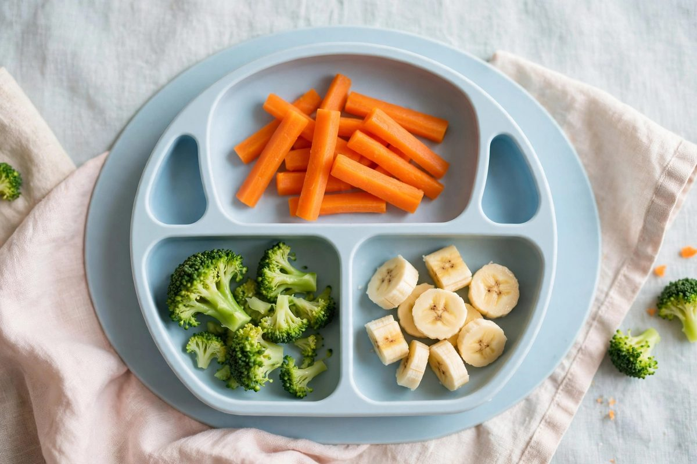
Finger FoodsSafe first finger foods, how to cut them to reduce choking risk, and how to build your baby's confidence.
 Baby-Led Weaning
Baby-Led WeaningWhat baby-led weaning is, how it differs from spoon-feeding, and how to start safely at six months.
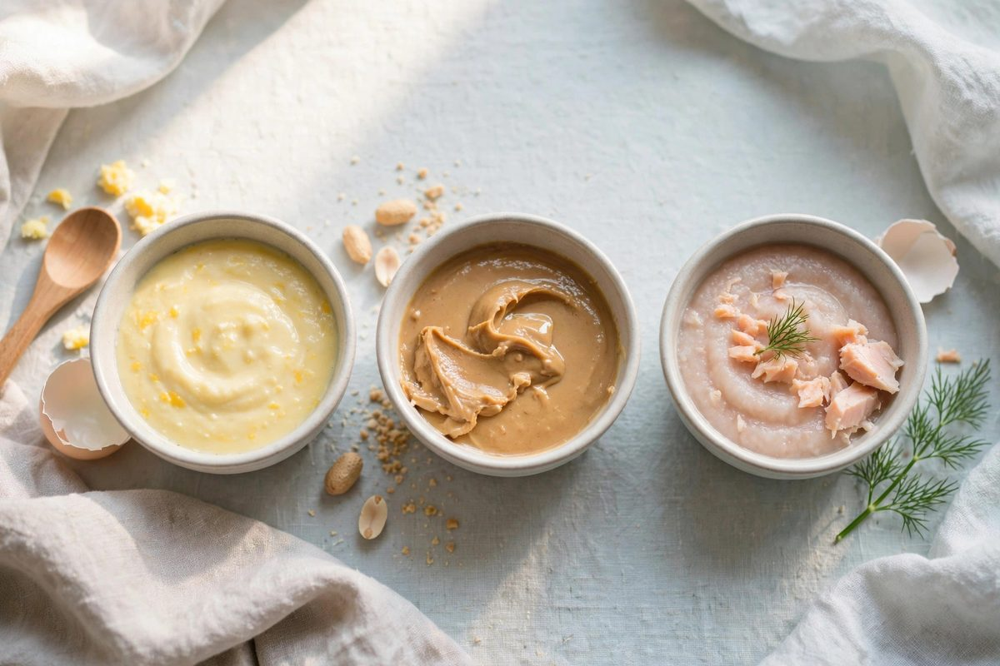
Introducing AllergensHow and when to introduce the nine common allergens, what to watch for, and what to do if a reaction happens.
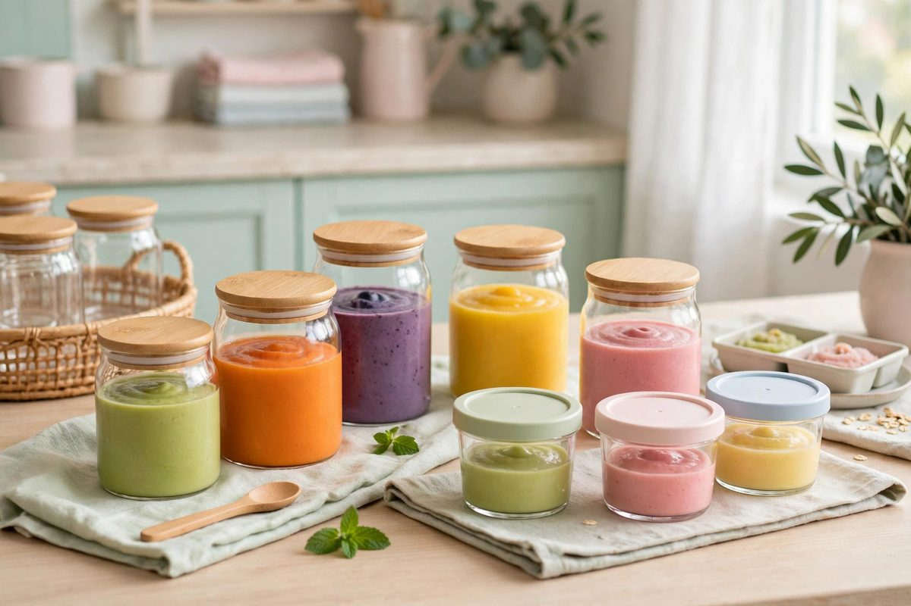
Storing Baby FoodSafe storage times for homemade baby food in the fridge and freezer, and how to reheat it properly.
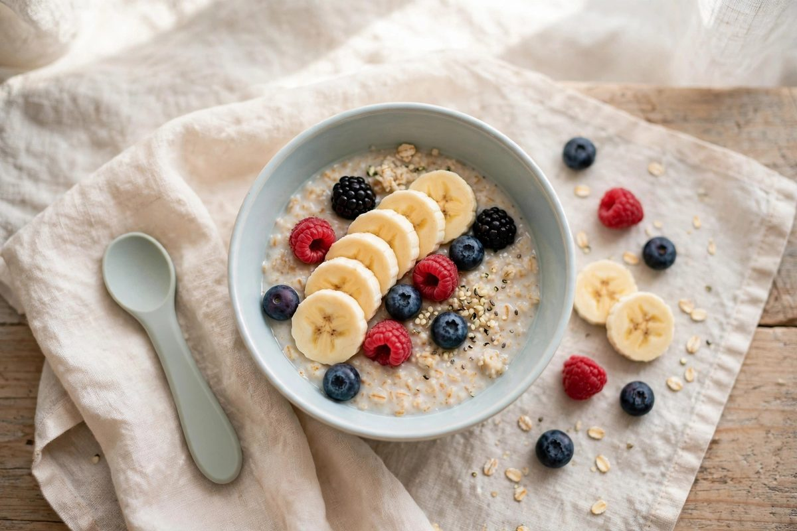
Baby Breakfast IdeasEasy, nutritious breakfasts for babies from six months to one year, with ideas for every stage.
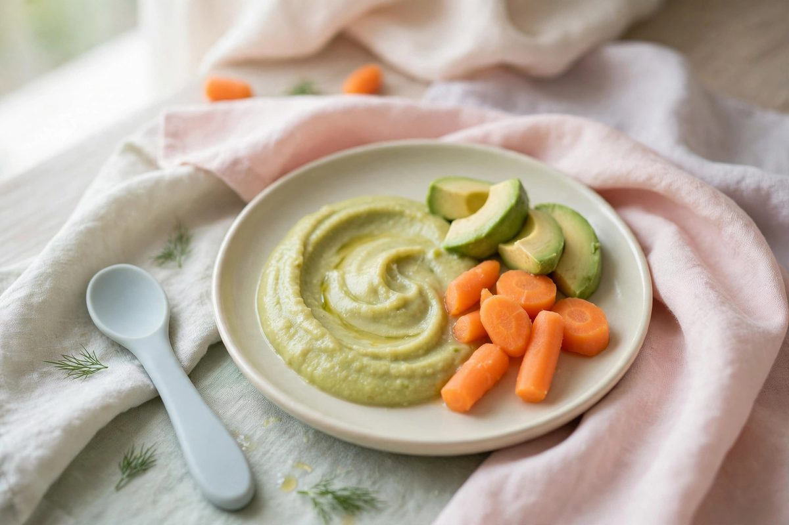
Baby Lunch IdeasSimple, balanced lunch ideas for babies at every weaning stage, using family foods and leftovers.
 Baby Dinner Recipes
Baby Dinner RecipesFive easy baby dinner recipes for the whole first year, from first purees to family meals.
 Baby Snacks
Baby SnacksHealthy snacks for babies from eight months onwards, what to avoid, and how snacks fit into the day.
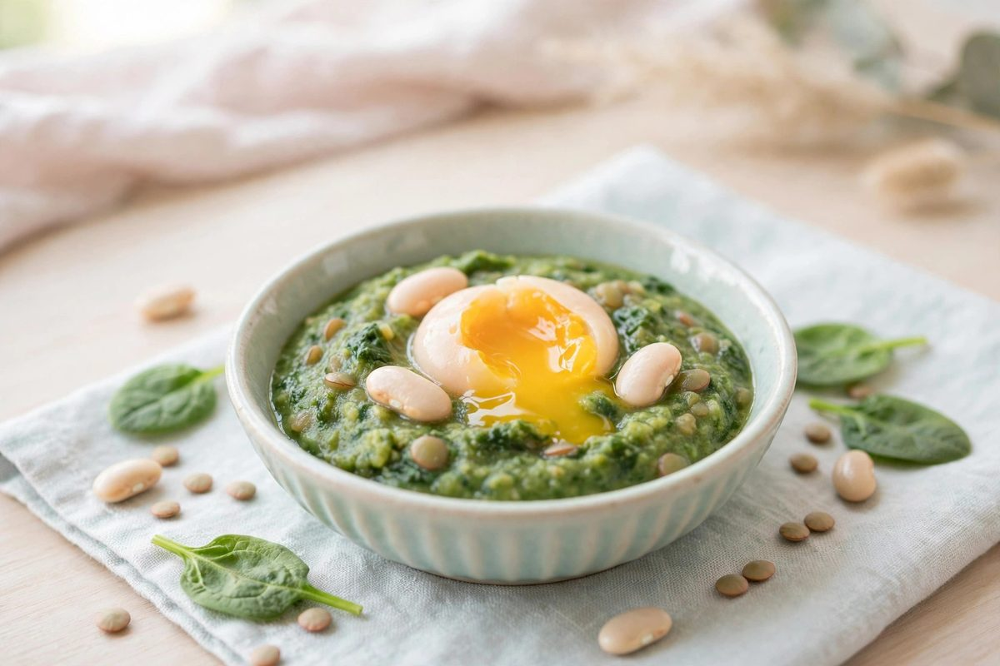
Iron-Rich Baby FoodsWhy iron matters after six months, the best iron-rich foods for babies, and how to help absorption.
 Baby Food Combinations
Baby Food CombinationsTasty food combinations for babies, how to build flavour, and which pairs help nutrient absorption.
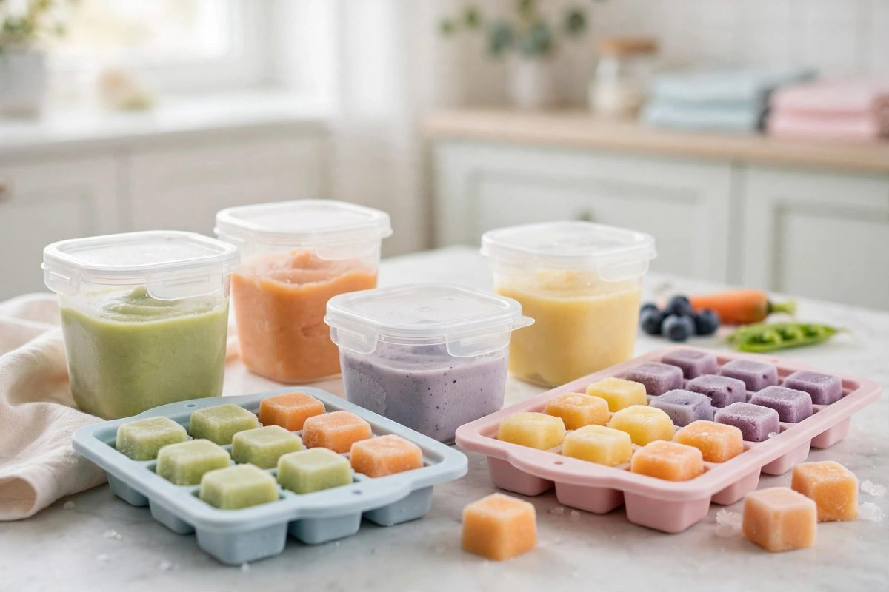
Freezing Baby FoodHow to freeze homemade baby food safely, which foods freeze well, and how to defrost portions.
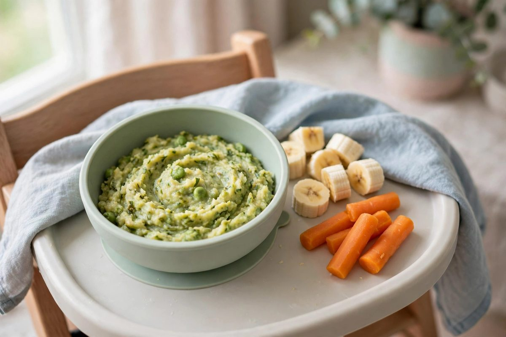
Baby Food for 9 MonthsWhat nine-month-old babies eat, how textures change, and a sample day of meals and snacks.
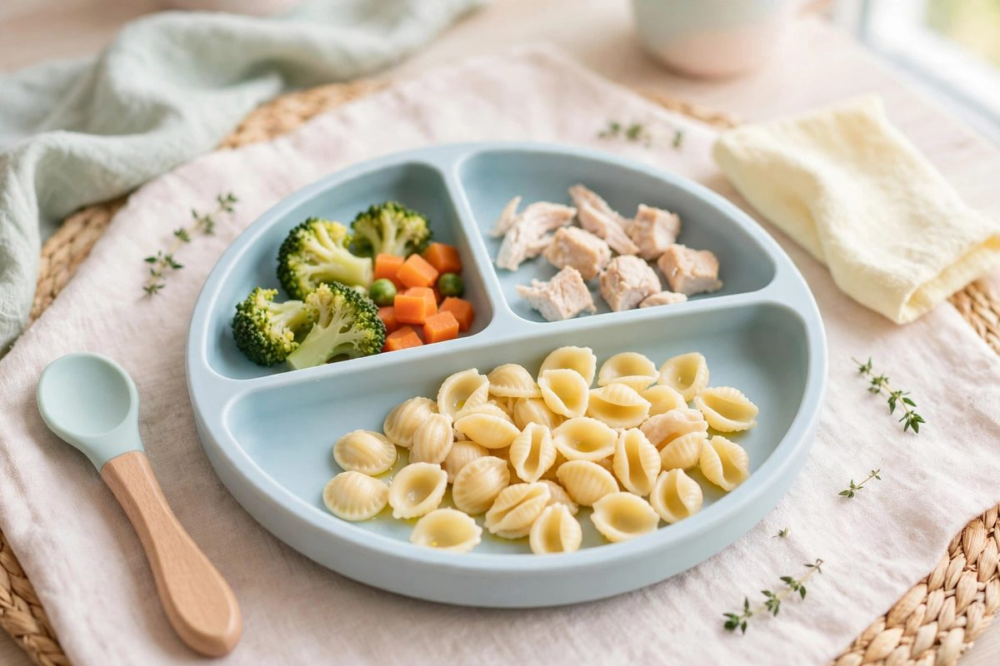
Baby Food for 12 MonthsThe move to family meals at one year, whole milk, new foods, and what changes after the first birthday.
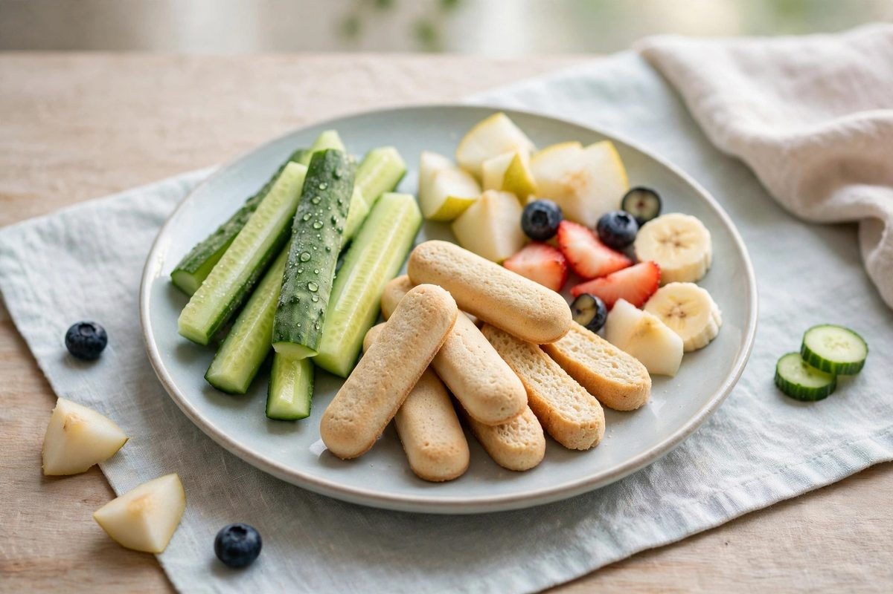
Teething FoodsSafe foods that soothe sore gums, what to offer while teething, and what to avoid.
 Baby Food Safety
Baby Food SafetyThe essential safety rules for feeding babies: choking hazards, hygiene, allergies, and safe preparation.
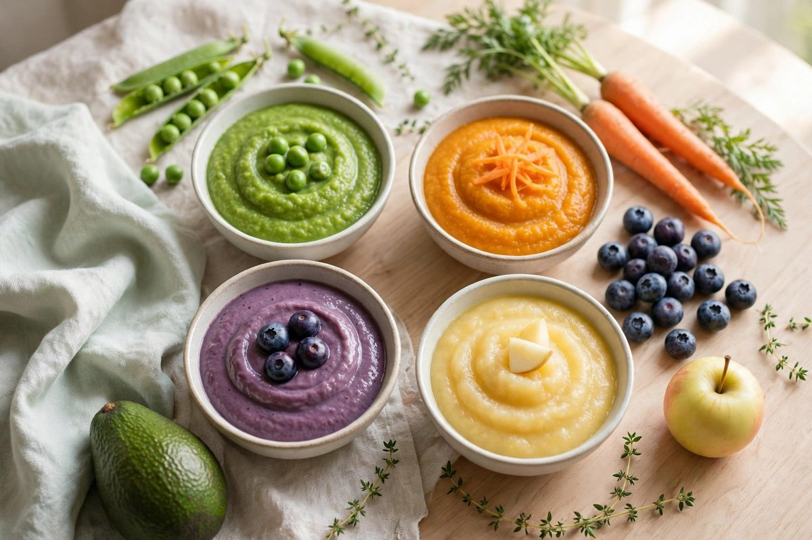
Organic Baby FoodIs organic baby food worth it? What organic means, which foods matter most, and how to save money.
 Baby Food on the Go
Baby Food on the GoHow to feed your baby away from home: packing, keeping food safe, and the best travel-friendly foods.
 Transition to Table Foods
Transition to Table FoodsHow to move your baby from purees and mashes to family table foods, step by step.